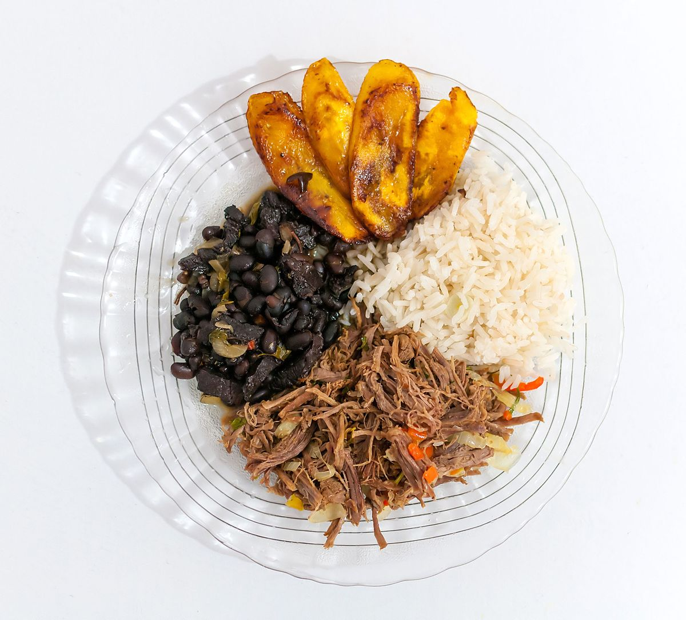

Hallacas

Descripción
PLato típico de un almuerzo de la gastronomia venezolana, su combinación de sabores es simple pero efectiva, nutritiva y reconfortante.
Combina varios elementos que, juntos, representan la diversidad cultural del país: carne mechada, arroz blanco, caraotas (frijoles) negras, y plátano frito.
Ingredientes para la carne mechada
- kg de falda de res
- 1 cebolla grande, picada en cubos
- 1 pimiento rojo, picado en cubos
- 1 pimiento verde, picado en cubos
- 4 dientes de ajo, machacados
- 2 tomates, picados en cubos
- 2 cucharadas de pasta de tomate
- 1 hoja de laurel
- 1 cucharadita de comino
- 1 cucharadita de orégano
- Sal y pimienta al gusto
- 1 cucharada de azúcar (opcional)
- Aceite vegetal
- Agua o caldo de res, suficiente para cubrir la carne
Ingredientes para el arroz blanco
- 2 tazas de arroz blanco
- 4 tazas de agua
- ½ kg. de pechugas sin hueso en tiras
- 1 diente de ajo (opcional)
- 1 cucharada de aceite vegetal
- Sal al gusto
Ingredientes para las caraotas negras
-
500 g de caraotas (frijoles) negras
-
1 cebolla pequeña, picada
-
2 dientes de ajo, machacados
-
1 pimiento verde, picado
-
2 hojas de laurel
-
1 cucharadita de comino
-
Sal y pimienta al gusto
-
Aceite vegetal
-
Agua
Ingredientes para los platanos fritos
-
2 plátanos maduros
-
Aceite para freír
Preparación
Preparar la carne mechada:
-
Coloca la carne en una olla grande, cúbrela con agua o caldo de res, agrega sal y una hoja de laurel. Cocina a fuego medio-alto
hasta que esté tierna, lo que puede tardar entre 1 a 2 horas. Una vez cocida, retírala y déjala enfriar un poco antes de
desmecharla (deshilacharla) con un tenedor o con las manos.
-
En una sartén grande, calienta un poco de aceite y sofríe la cebolla, el ajo, los pimientos y el tomate hasta que estén blandos.
Agrega la pasta de tomate, el comino, el orégano, la sal y la pimienta, y cocina por unos minutos más.
-
Agrega la carne desmechada al sofrito y mezcla bien. Cocina a fuego medio-bajo durante unos 15-20 minutos, añadiendo un poco del caldo
de la cocción si es necesario, hasta que la carne esté bien impregnada de los sabores.
Preparar el arroz blanco:
-
Lava el arroz con agua fría hasta que el agua salga clara.
-
En una olla, calienta una cucharada de aceite y sofríe el ajo (opcional) hasta que esté dorado. Agrega el arroz y mezcla bien.
Luego, añade el agua y sal al gusto. Cocina a fuego alto hasta que el agua se evapore, luego reduce a fuego bajo, tapa la
olla y cocina por 15-20 minutos hasta que el arroz esté cocido y esponjoso.
Preparar las caraotas negras:
-
La noche anterior, remoja las caraotas en agua suficiente para que se hidraten.
-
Al día siguiente, escurre las caraotas y colócalas en una olla grande con agua limpia. Agrega las hojas de laurel y cocina a fuego
medio hasta que estén tiernas, lo que puede tardar 1-2 horas.
-
En una sartén, calienta un poco de aceite y sofríe la cebolla, el ajo y el pimiento verde. Agrega el comino y mezcla bien. Luego,
incorpora este sofrito a las caraotas y cocina a fuego bajo durante unos 20-30 minutos más. Ajusta de sal al gusto.
Preparar los plátanos fritos:
Pela los plátanos y córtalos en rodajas diagonales. En una sartén, calienta suficiente aceite y fríe las rodajas de plátano
hasta que estén doradas por ambos lados. Escurre sobre papel absorbente.
Montaje del plato:
En un plato grande, sirve una porción de arroz blanco, al lado una porción de caraotas negras, junto a la carne mechada, y acompaña con las rodajas
de plátano frito.